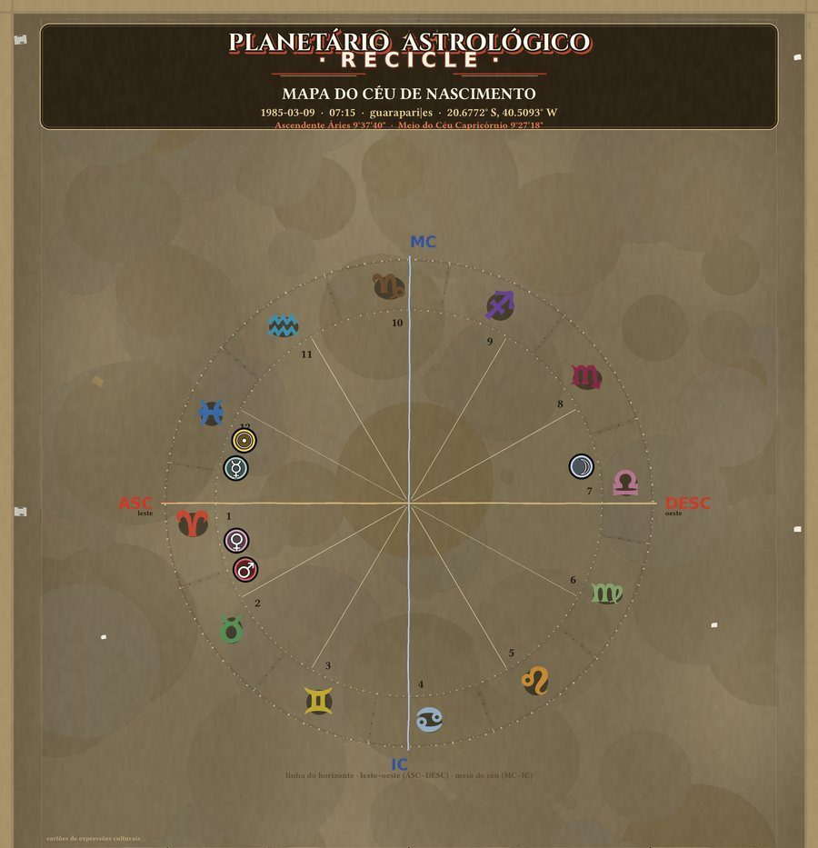
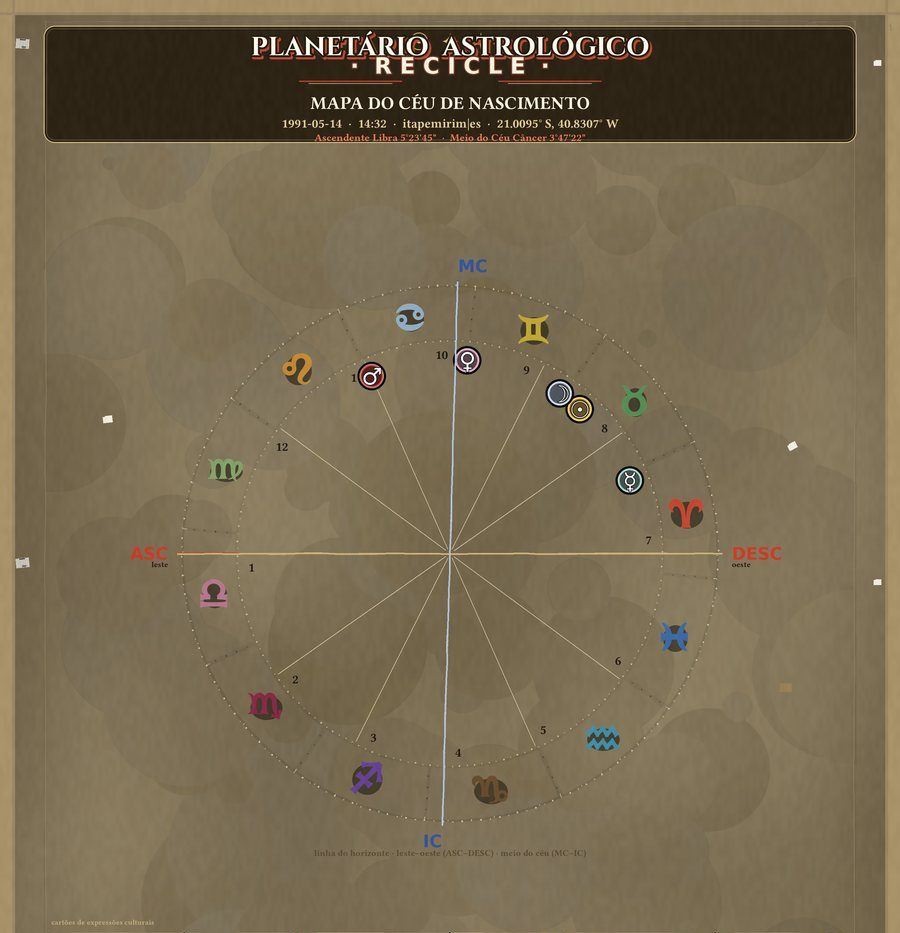
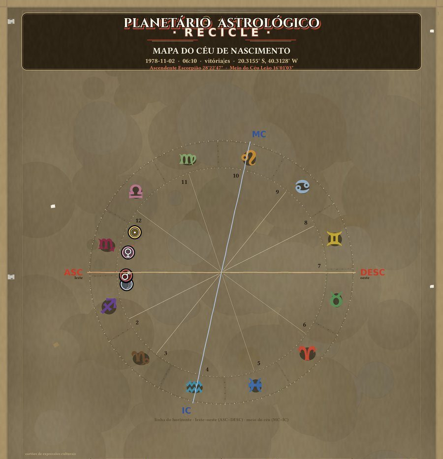
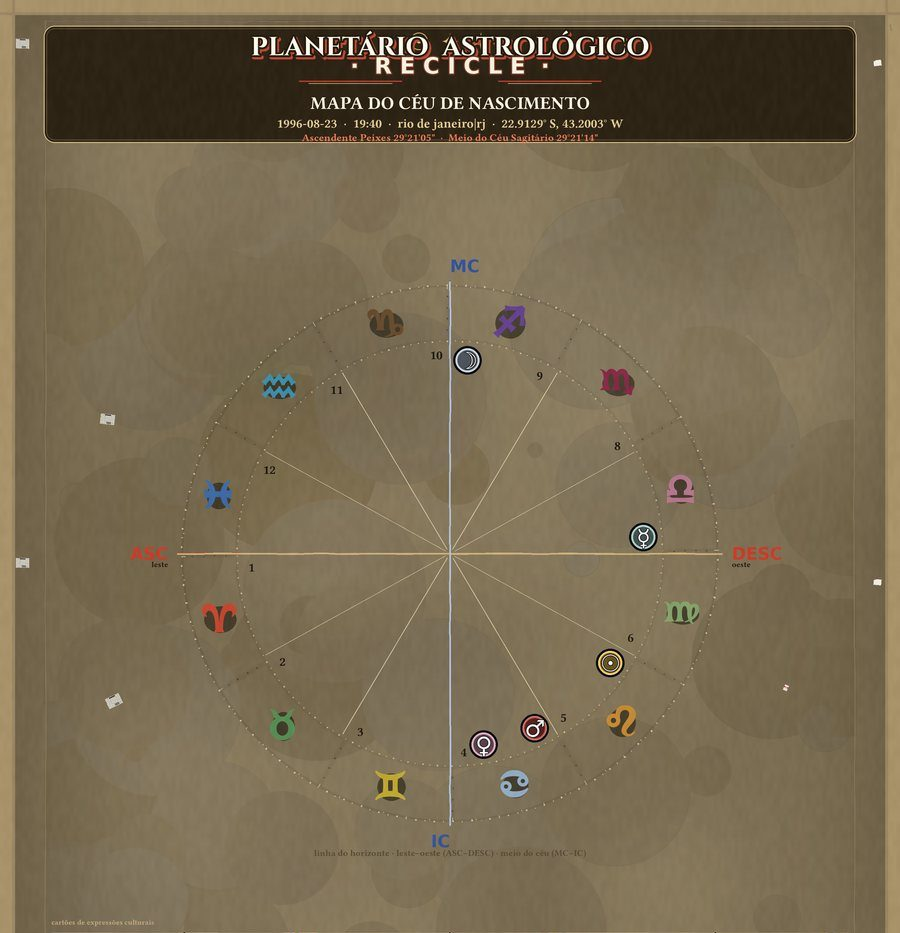
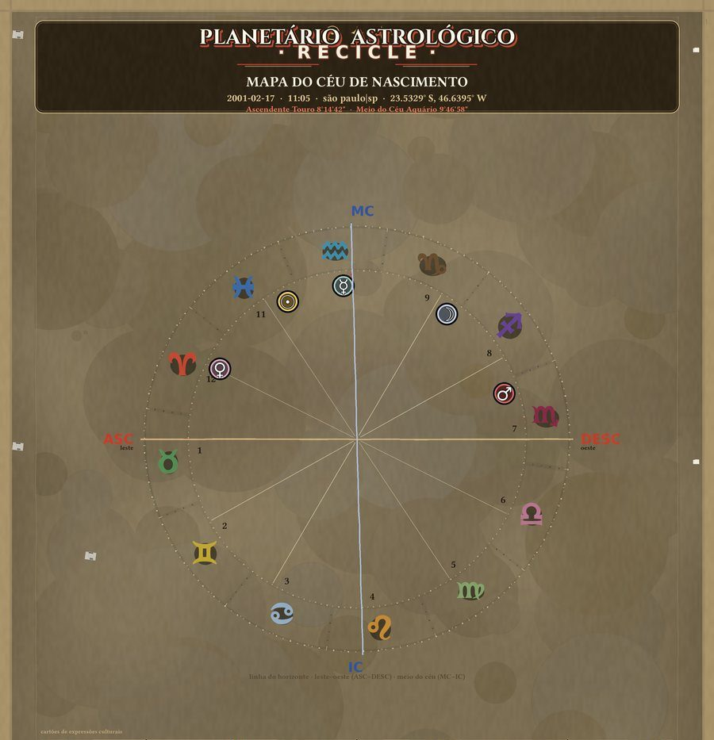
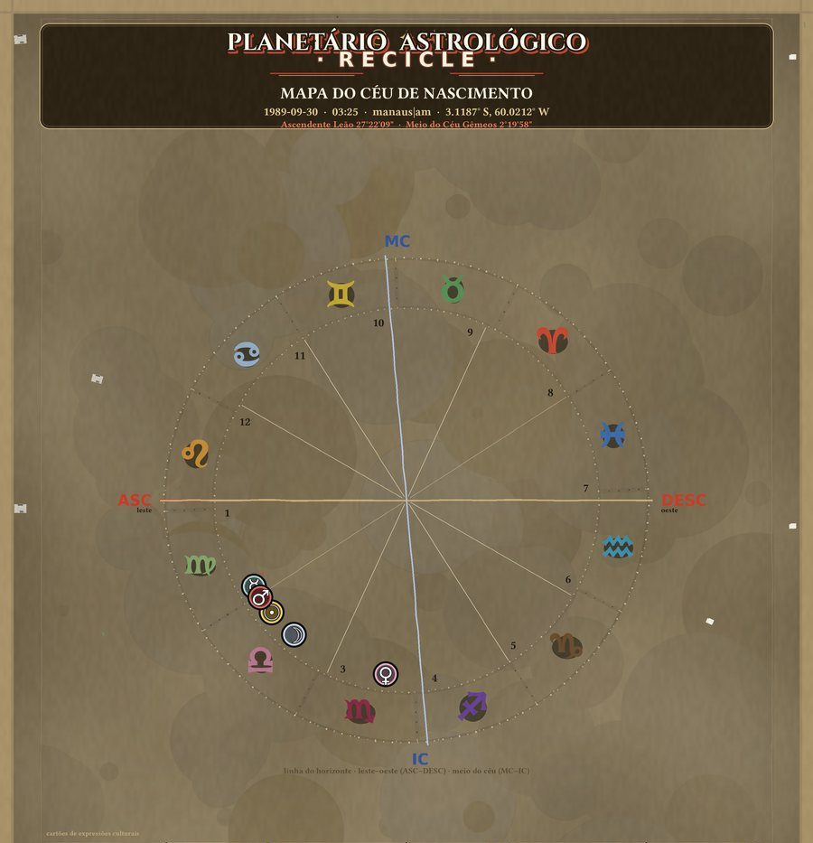

Um mapa astrológico desenhado a partir de efemérides reais — Swiss Ephemeris —
e lido pelas tradições afro-brasileira, do folclore e dos povos originários.
Cada cultura dá nome diferente às mesmas estrelas.
✓ Sem cadastro✓ Grátis✓ Não guardamos seus dados✓ Swiss Ephemeris
Veja como fica
Seis mapas gerados em cidades brasileiras, com posições calculadas para o
instante exato de cada nascimento — o planetário completo, o mesmo que
você recebe ao usar o app.

Guarapari, EScosta, maresia e Mata Atlântica

Itapemirim, EScasa do Planetário Reciclável

Vitória, EScidade de morro e mar

Rio de Janeiro, RJcerros contra o mar

São Paulo, SPa cidade que nunca dorme

Manaus, AMonde o rio encontra o equador
Todos os mapas desta página foram gerados com posições astronômicas reais.
As correspondências entre signos e arquétipos são leituras do projeto, marcadas
como hipótese — não são equivalências tradicional\-mente estabelecidas.
Três leituras do mesmo céu
O hemisfério sul tem constelações que o norte não tem, e os povos que
vivem aqui deram a elas outros nomes. O Iastro trabalha com essas camadas
lado a lado, sem eleger uma como a verdadeira.
Afro-brasileira
Os orixás ganham lugar no mapa. Oxalá à cabeceira, Iemanjá no mar,
Oxóssi no mato. Cada um com história e fonte — de Prandi a Verger.
107 arquétipos catalogados
Folclore brasileiro
A Mestra Oraide, o Curupira, a Moça que engole as sete Marias.
O folclore do interior lido como cartografia do céu.
contos e lendas
Povos originários
Tupiniquins, Tukano, Krahô, Pataxó e Xavante. As constelações do hemisfério
sul lidas a partir de onde a palavra foi formada.
em construção
O app também oferece as camadas regionais — capixaba, carioca, mapuche e
nordestina. Escolha o seu foco ao gerar o mapa, ou deixe "todas as
culturas" para ver tudo lado a lado.
Tudo o que vem, de graça
Não existe versão curta nem versão paga. O app entrega o planetário
inteiro, em alta resolução, pronto para impressão. Um botão só.
O Iastro foi desenhado com a Lei Geral de Proteção de Dados
(Lei nº 13.709/2018) em mente. Isto não é rodapé de letra miúda:
As decisões — separadas, como a lei exige
1
Grátis não é pegadinhaNão existe versão curta nem versão paga. Quem entra com data, hora e local recebe o planetário inteiro, em alta resolução. Nada é retido para cobrar depois.
2
Você escolhe se entra na pesquisaUm interruptor decide se o registro entra no banco de pesquisa do projeto. Desligado é o padrão. Desligado, seu mapa é entregue e apagado — o serviço funciona igual.
3
Você pode apagar quando quiserPor e-mail, sem custo e sem formulário. Resposta em até 15 dias; para confirmação simples, imediata. Isto é o art. 18º da LGPD.
O que nunca é publicado: nome, e-mail, endereço, ou a imagem do mapa
de alguém. A tabulação só usa números agregados e anonimizados — data
reduzida ao mês, hora reduzida à faixa do dia, cidade arredondada. Dado
anonimizado
não volta a ser identificável.